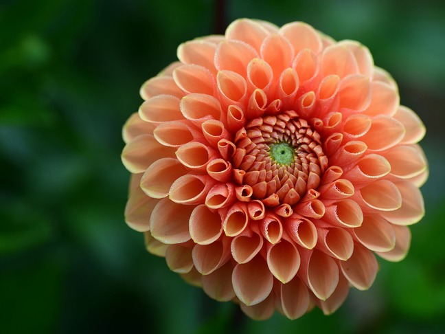
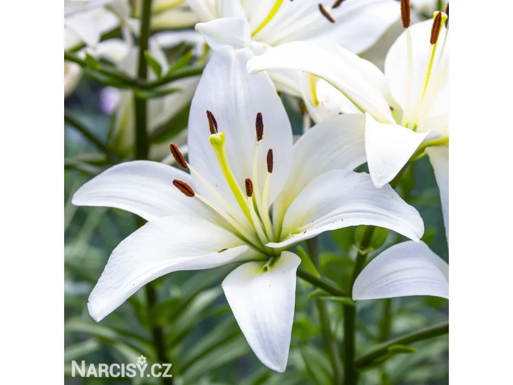

Cibuloviny
|
 |
Při pohledu na naši nabídku cibulovin jiřinek Vám srdce poskočí. Ty barvy, variabilita květů, nadýchanost, jemnost, elegance, tajemno a souměrnost Vás uhranou. Příroda je mocná čarodějka a na jiřinkách nám ukazuje své možnosti. Za povšimnutí jednoznačně stojí kultivar 'Franz Kafka' či 'Bristol Stripe', ale ani ostatní nevynechejte a kochejte se. Jiřinky jsou dekorační květiny, vhodné k řezu, hodí se i jako solitéra. |
 |
Begonie jsou velmi oblíbené balkonové rostliny. Kvetou většinou velmi bohatě. Zdobí naše okna zevnitř i zvenčí. Nádherně se budou vyjímat v okenních truhlících, ale i v záhonu. Jejich velkou výhodu je, že nejsou relativně náročné na péči a během chvilky Vám vytvoří nádhernou podívanou plnou nadýchaných květů. |
|  |
Lilie jsou právem označovány jako královny zahrad. A kdo by nechtěl mít na zahradě královnu, jste-li vášnivý zahradník, tak lilie Vám nesmí chybět. Exotické květy mají jako bonus opojnou vůni, z pěstování tedy máte dvojí zážitek. Okvětní plátky jsou pestře zabarvené, z barevné kombinace si můžete vybírat, naše nabídka Vám jednoznačně vyrazí dech. Proměňte sny ve skutečnost a oživte zahradu či záhon. |
Hlavní stránka